操作系统原理 · 第 2 章 结构与硬件支持
2.3 操作系统的结构
上一节从工程角度说了组织结构「为什么重要」，这一节把四种结构类型逐一摊开：单体结构、模块结构、层次结构和可扩展内核结构（微内核），每种都讲清它的做法、优点和代价；然后用 UNIX、Linux、Windows、Android 和鸿蒙五个真实系统做实例，最后回到硬件——虚拟技术要落地，硬件必须提供哪些支持。
1. 操作系统的结构类型
操作系统内部的组织方式，按发展顺序有四种类型。
（1）单体结构
单体结构的特点是：操作系统是一组函数或过程的集合，这些过程之间可以相互调用而不受约束。也就是说，除了「都在一个程序里」之外，几乎没有别的结构可言，所以它也被称为无结构的操作系统。
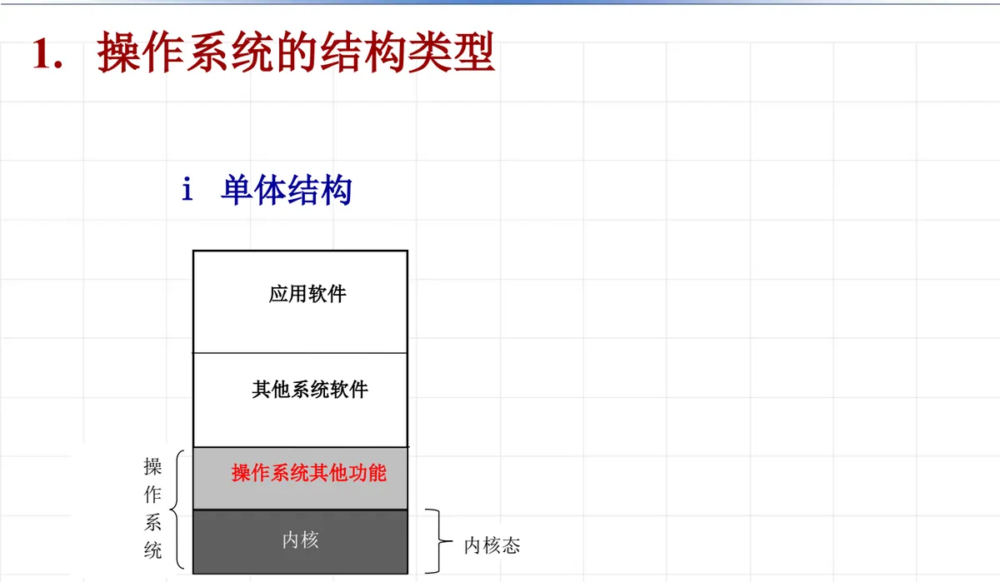
- 优点：操作系统运行效率高——过程之间直接调用，没有额外的层次开销；
- 缺点：难以理解，难以维护，难以验证；
- 代表：AT&T System V 和 BSD UNIX。
（2）模块结构
模块结构把操作系统拆成若干个逻辑上独立的功能模块，模块之间约定好接口。
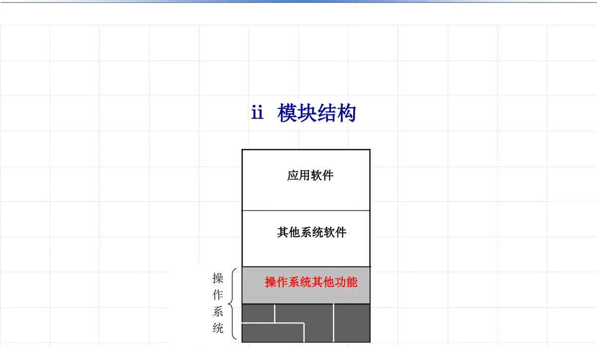
它的特点可以概括为四条：操作系统由多个逻辑上独立的功能模块构成；各模块之间有良好定义的接口；模块内部隐藏了实现细节；各个模块之间可以相互调用。前三条正是「高聚合、低耦合」的落实，最后一条说明它比层次结构宽松——正因为如此，它有利于操作系统的理解和维护，却不像层次结构那样把调用方向锁死。
（3）层次结构
层次式结构是把操作系统划分为内核和若干功能模块，并让它们按层次排列。
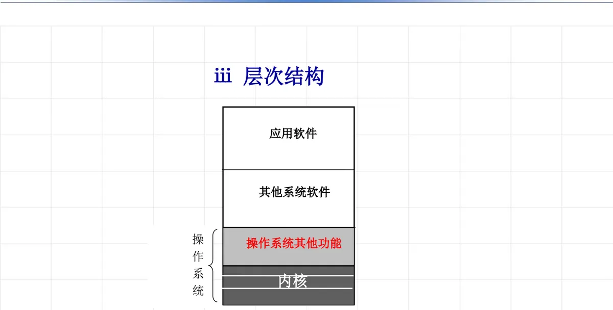
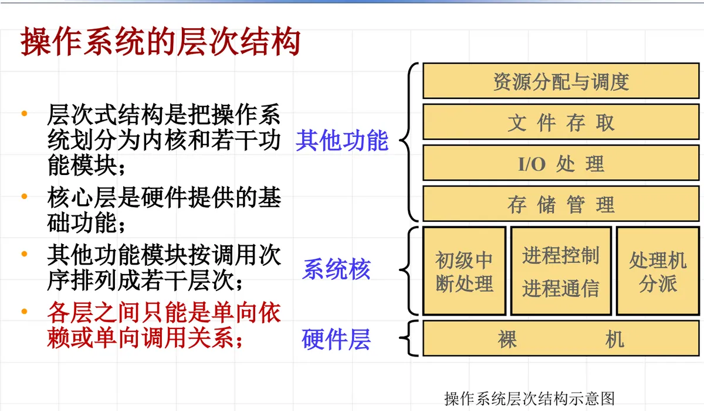
- 优点：系统结构清晰，各层之间不构成循环；整体问题局部化，系统的正确性可通过各层的正确性来保证；增加、修改或替换某一层次不会影响其他层次，有利于系统的维护和扩充；
- 缺点：限制过于严格——各层只能单向依赖；过于追求形式反而会使系统更复杂、效率低；在真实系统中很难完全做到，因此「不现实，只是一种指导原则」。
（4）可扩展内核结构（微内核）
可扩展内核结构把操作系统内核分为基础核心和其他核心功能两部分。
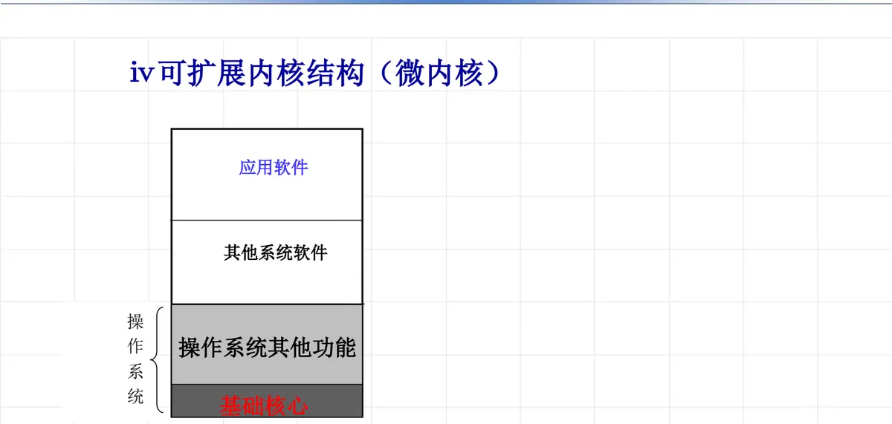
- 基础核心只包括必需的最基本的功能集合：处理器管理、低级存储器管理、中断处理、进程间通信；
- 其他功能通过运行在核外的服务进程来实现，采用 Client/Server 方式；典型的服务进程有文件系统、设备驱动、网络协议栈、图形系统、各种虚拟资源管理等；
- 优点：灵活性、易维护性和可扩充性——基础核心稳定、易于维护，服务进程便于定制；
- 缺点：效率非常低。
效率低在哪里？因为操作系统是以客户/服务器形式为用户程序服务的：内核把用户请求传给服务器，服务器进程执行用户请求，内核再把请求结果返回给用户程序。这一来一回要付出三类开销：消息发送拷贝、处理器状态切换、虚拟内存切换。
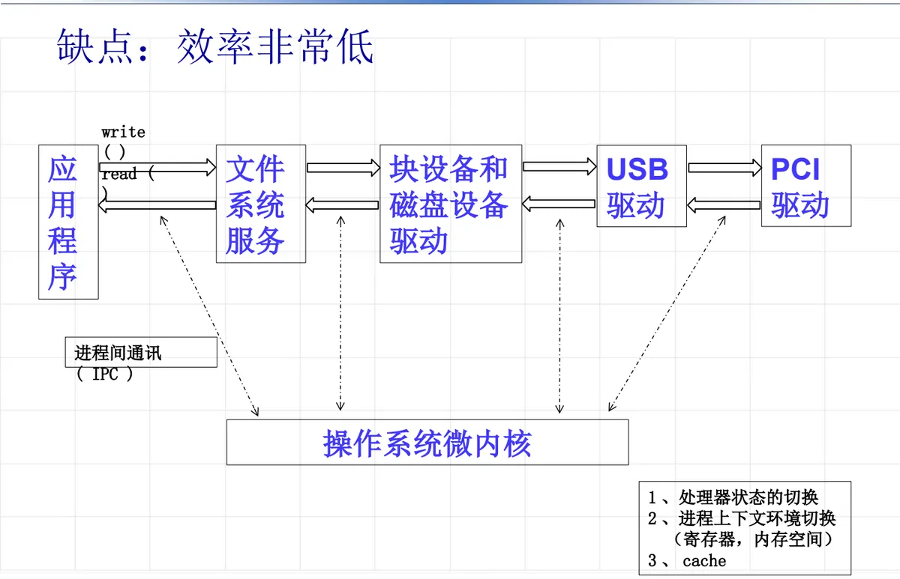
尽管代价明确，微内核在可靠性与可扩展性上的吸引力仍然很大，课件列出的代表系统包括：卡耐基梅隆大学研制的 Mach OS（最有代表性，1985 年启动，1994 年推出 Mach 3.0）、iOS、L4 与 seL4、Quantum Software Systems 公司的 QNX，以及 HarmonyOS Next 鸿蒙微内核。
2. 实例操作系统的结构
（1）UNIX 系统
UNIX 的结构分成核心层和实用层两大部分：
- 核心层：处理机管理、存储管理、设备管理、文件系统；
- 实用层：一类是实用程序，如编辑程序、调试程序、系统状态监控、文件管理等；另一类是存储管理软件工具，如源代码控制程序 SCCS、文档准备程序包等。
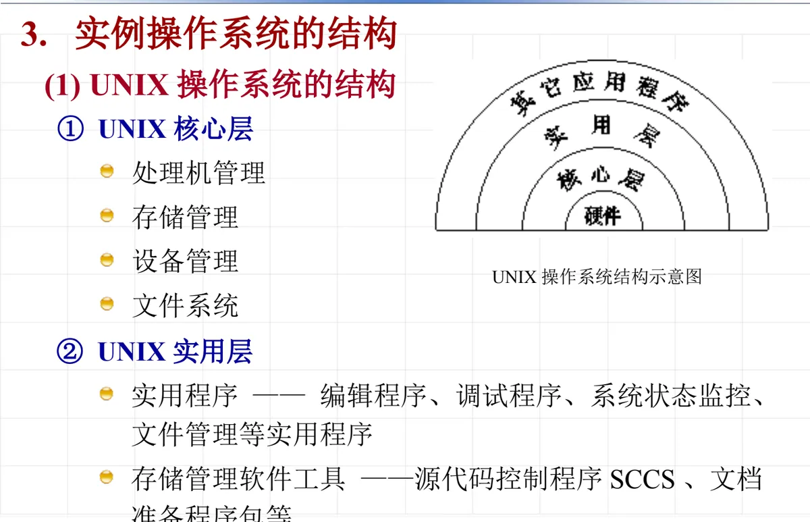
（2）Linux 系统的核心结构
Linux 的核心结构有三个特点：模块化（大模块、小模块并存）；局部的层次化；以及呈现微内核的趋势。三者合起来，既保留了单体结构的高效率，又吸收了模块化带来的可维护性与可扩展性。
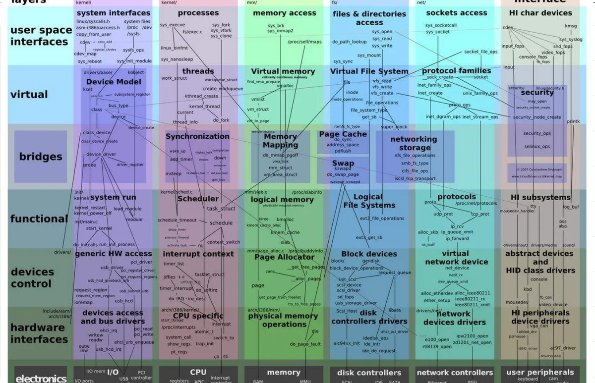
（3）Windows 操作系统
Windows NT/2000/XP 系统结构的设计目标有五条：可扩充性、可移植性、可靠性与坚固性、兼容性、高性能。它采用基于对象的技术，提出了一种 C/S（客户/服务器）系统结构；这种结构在纯微内核结构的基础上做了扩展，融合了层次式结构和纯微内核结构的特点——对操作系统性能影响很大的组件放在内核下运行，其他功能则在内核外实现。由此得到的主要优点是：模块化程度高、灵活性大、便于维护、系统性能好。
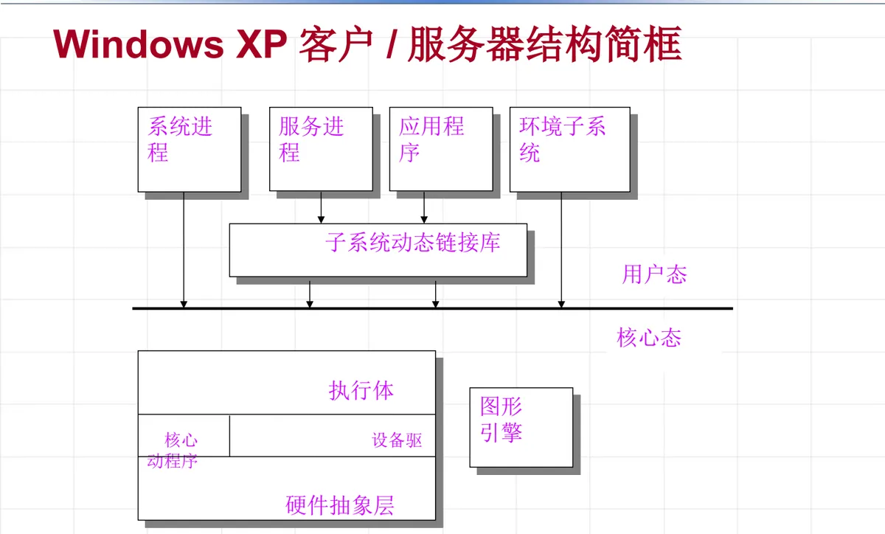
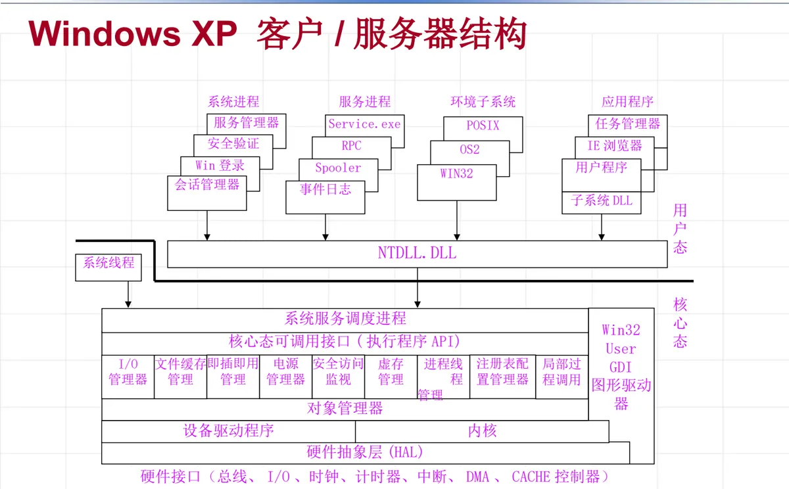
（4）Android 架构
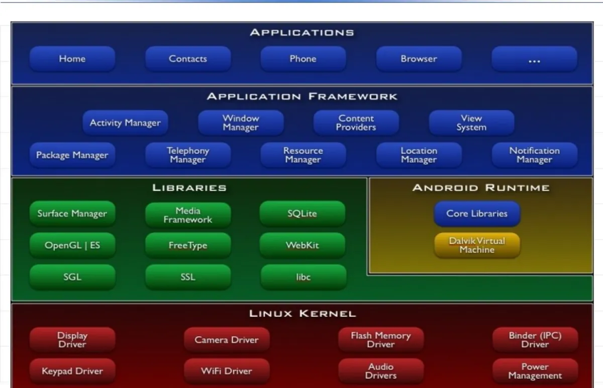
按层次自下而上理解 Android：
- 最底层是 Linux Kernel 在移动平台上的一个移植，它隐藏了硬件、网络等相关的细节，为上层提供了一个相对干净的、统一的接口；
- 其上一层是一些核心的和扩展的类库，都是原生的 C++ 实现。这一层里能看到很多熟悉的开源身影，开源的力量与贡献由此可见。如果该层类库需要被上层函数调用，就必须通过 JNI 导出相应的接口函数，否则只能在层次内部自行调用；
- 再往上是框架层，包含所有开发所用的 SDK 类库，另外还有一些未公开接口的类库和实现，它们是整个 Android 平台核心机制的体现；
- 最上面是应用层，系统自带的应用和第三方开发的所有应用都位于这一层，总是基于 SDK 来实现。
（5）HarmonyOS Next 鸿蒙微内核
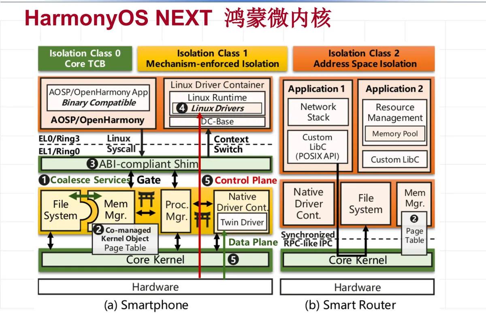
鸿蒙内核包含一个核心内核加一系列高权限的特权服务；鸿蒙内核之上可以运行复杂的应用框架，比如 AOSP、OpenHarmony。课件给出的数据是：鸿蒙内核有 9 万行核心代码，基于 C 语言的受限子集实现，100% 自研；而鸿蒙系统所有服务版本合计超过 100 万行代码。据课件介绍，其性能和安全性超越 Linux 同类设备，并且可以根据针对各种场景指定的详细配置来组装 OS 服务。
它的基本判断是：微内核的可靠性、安全性和扩展性优于宏内核。但微内核也有两个公认的挑战——兼容性、生态系统、重用已有软件，以及上一小节反复提到的性能问题。课件随后列出了应对这些挑战的具体做法：
- 最大限度地提高与 Linux 系统的兼容性：完全兼容 Linux API/ABI，可以重用 Linux 应用软件（而不仅仅是只兼容 POSIX 标准）；
- 提供 Linux 驱动容器 LDC：LDC 通过修改开源 Linux 内核代码，作为用户空间运行时来运行未修改的 Linux 驱动程序，包括未开源的二进制驱动程序。课件补充了这么做的必要性——驱动数量需求快速增长，车辆和手机要求超过 700 个驱动，重写估计需要 5000 人一年的工作量；目前支持 Linux 内核驱动 4.4、4.19、5.10 版本；
- 孪生驱动程序（twin drivers）：对于性能关键的 Linux 驱动程序（相机、闪存存储），在本地驱动层创建孪生驱动程序，接收设备信息和操作命令，以降低性能开销；
- 优化同步 IPC 调用过程：减少 IPC 往返调用次数；
- 实现灵活的系统服务组合：把可信服务紧密耦合，降低隔离带来的 IPC 开销；
- 灵活使用共享内存：实现内核对象所在内存页面的共享，使服务进程可以直接访问内核对象。
3. 操作系统的结构和硬件支持
结构讲完，还要回到 2.1 节提出的目标：要实现操作系统虚拟机及相关虚拟技术，硬件必须提供哪些支持？先把虚拟技术要达成的三件事摆出来：
- CPU 调度和分配（时间）：分时技术、时间片，虚拟 CPU、独占；
- 内存管理（空间）：虚拟存储技术、虚拟地址空间、独占，以及虚拟地址到物理地址的转换；
- 设备管理：虚拟设备（输入、输出），共享和分时。
这三件事都不是纯软件能独立完成的，它们对硬件提出了相应的要求：时间上的虚拟需要定时与计时机制（时钟中断）来产生时间片；空间上的虚拟需要地址转换与存储保护的硬件支持；设备的共享与分时需要中断机制来通知 I/O 完成。这些硬件支持正是本章后续几节的内容——2.4 节讲处理机的特权级，2.5 节讲中断及其处理，2.6 节看 Linux 是怎么做的。
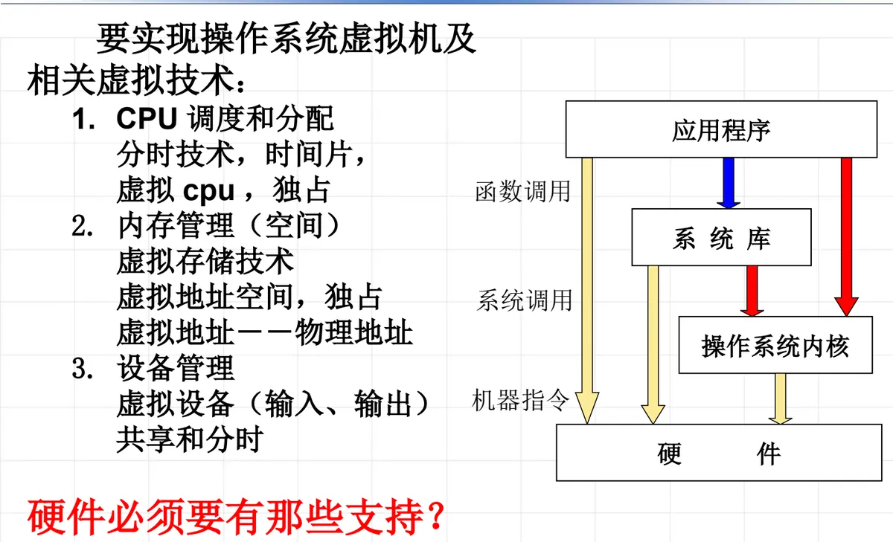
本节小结
- 四种结构类型：单体结构（一组可相互自由调用的函数或过程的集合，即无结构；效率高，但难以理解、维护、验证；代表是 AT&T System V 与 BSD UNIX）；模块结构（多个逻辑上独立的功能模块，有良好定义的接口，模块内部隐藏实现细节，模块之间可相互调用）；层次结构（划分内核与若干功能模块，各层单向依赖；结构清晰、问题局部化、便于替换，但限制过严、易流于形式）；可扩展内核结构（微内核）；
- 微内核把内核分为基础核心（处理器管理、低级存储器管理、中断处理、进程间通信）与核外服务进程（文件系统、设备驱动、网络协议栈、图形系统、虚拟资源管理等），以 Client/Server 方式服务；优点是灵活性、易维护性、可扩充性，缺点是效率非常低，开销来自消息发送拷贝、处理器状态切换和虚拟内存切换；代表系统有 Mach OS、iOS、L4/seL4、QNX 与鸿蒙；
- 实例结构：UNIX 分核心层（处理机、存储、设备、文件系统）与实用层（实用程序、SCCS 等工具）；Linux 核心结构是模块化＋局部层次化＋微内核趋势；Windows NT/2000/XP 以可扩充性、可移植性、可靠性与坚固性、兼容性、高性能为目标，采用融合层次式与微内核特点的 C/S 结构，性能关键组件放在内核下运行；Android 自下而上为 Linux 内核、原生 C++ 类库层（跨层调用需经 JNI 导出接口）、框架层（SDK 类库）与应用层；
- 鸿蒙微内核由核心内核加高权限特权服务构成，核心代码 9 万行、100% 自研，服务版本合计超过 100 万行；针对兼容性与性能挑战，采取完全兼容 Linux API/ABI、Linux 驱动容器 LDC、孪生驱动、优化同步 IPC、灵活的服务组合与共享内存等措施；
- 虚拟技术（CPU 时间上的虚拟、内存空间上的虚拟、设备虚拟）必须得到硬件的支持：时钟与计时、地址转换与存储保护、中断机制；这正是 2.4～2.6 节要讲的特权级与中断处理。